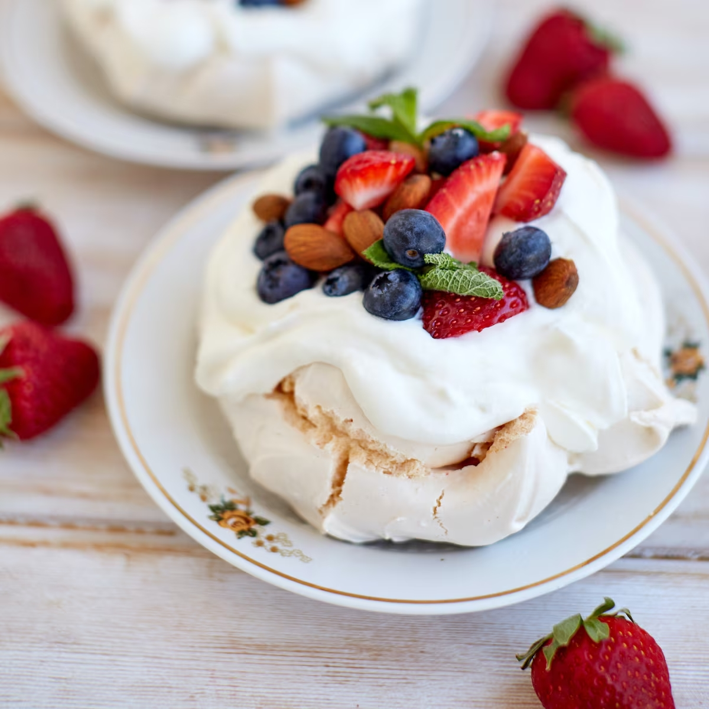

Receita de Pavlova

Ingredientes
- 4 claras de ovo
- 1 xícara de açúcar
- 1 colher de sopa de amido de milho
- 1 colher de chá de vinagre branco
- 1 colher de chá de essência de baunilha
- 1 xícara de creme de leite fresco
- Frutas frescas (como morangos, kiwis e frutas vermelhas) para decorar
Instruções
- Preaqueça o forno a 150°C e forre uma assadeira com papel manteiga.
- Bata as claras em neve até começarem a formar picos suaves.
- Adicione o açúcar gradualmente, batendo até obter picos firmes e brilhantes.
- Incorpore delicadamente o amido de milho, o vinagre e a essência de baunilha.
- Transfira a mistura para a assadeira, moldando-a em um círculo com um leve buraco no meio.
- Asse por 1 hora e 15 minutos, até a pavlova ficar seca por fora e macia por dentro. Desligue o forno e deixe esfriar completamente dentro do forno.
- Depois de esfriar, bata o creme de leite até obter picos suaves e espalhe sobre a pavlova.
- Decore com as frutas frescas a gosto.
- Sirva imediatamente e aproveite!
Voltar